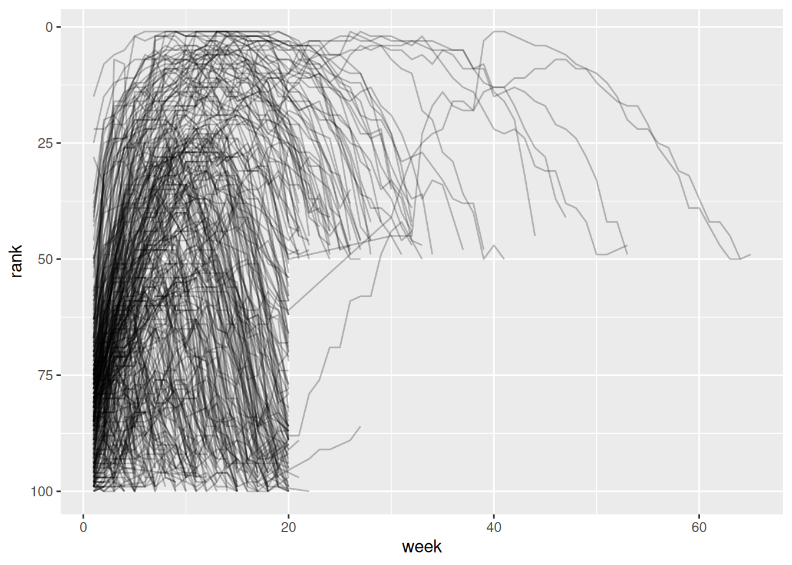

library('here')here() starts at /home/teacher/projects/edu-analytics/learningExercises and examples from R 4 Data Science and R for Everyone, combined and grouped by topic and package.
library('here')here() starts at /home/teacher/projects/edu-analytics/learninghttps://cran.r-project.org/web/packages/data.table/vignettes/datatable-intro.html Everyone says this is super fast package, but you need to understand some other style than tidy. Let’s take a look.
library('data.table')download.file('https://raw.githubusercontent.com/Rdatatable/data.table/master/vignettes/flights14.csv',destfile=here('data/flights14.csv'))input <- here('data/flights14.csv')
flights <- fread(input)
flights year month day dep_delay arr_delay carrier origin dest air_time
<int> <int> <int> <int> <int> <char> <char> <char> <int>
1: 2014 1 1 14 13 AA JFK LAX 359
2: 2014 1 1 -3 13 AA JFK LAX 363
3: 2014 1 1 2 9 AA JFK LAX 351
4: 2014 1 1 -8 -26 AA LGA PBI 157
5: 2014 1 1 2 1 AA JFK LAX 350
---
253312: 2014 10 31 1 -30 UA LGA IAH 201
253313: 2014 10 31 -5 -14 UA EWR IAH 189
253314: 2014 10 31 -8 16 MQ LGA RDU 83
253315: 2014 10 31 -4 15 MQ LGA DTW 75
253316: 2014 10 31 -5 1 MQ LGA SDF 110
distance hour
<int> <int>
1: 2475 9
2: 2475 11
3: 2475 19
4: 1035 7
5: 2475 13
---
253312: 1416 14
253313: 1400 8
253314: 431 11
253315: 502 11
253316: 659 8fread is pretty cool. You can give it just about anything.
?fread
data.table is (provides) an enhanced data.frame. fread or call data.table() function
DT = data.table(
ID = c('b', 'b', 'b', 'a', 'a', 'c'),
a = 1.6,
b = 7:12,
c = 13:18
)
DT ID a b c
<char> <num> <int> <int>
1: b 1.6 7 13
2: b 1.6 8 14
3: b 1.6 9 15
4: a 1.6 10 16
5: a 1.6 11 17
6: c 1.6 12 18class(DT$ID)[1] "character"See ?setDT and ?as.data.table for converting existing objects to data.table data.table doesn’t set or use row names ever. Something about this is why it’s so fast. See
a lot can happen inside DT[ … ], this more like querying DT analog to SQL
DT[i, j, by]
Get all the flights with ‘JFK’ as the origin airport in the month of June.
## R: i j by
## SQL: where | order by select | update group byTake DT, subset/reorder rows using i, then calculate j, group by by.
Refer to the columns as if they are variables! Check out origin and month
ans <- flights[origin == 'JFK' & month == 6L]
head(ans) year month day dep_delay arr_delay carrier origin dest air_time
<int> <int> <int> <int> <int> <char> <char> <char> <int>
1: 2014 6 1 -9 -5 AA JFK LAX 324
2: 2014 6 1 -10 -13 AA JFK LAX 329
3: 2014 6 1 18 -1 AA JFK LAX 326
4: 2014 6 1 -6 -16 AA JFK LAX 320
5: 2014 6 1 -4 -45 AA JFK LAX 326
6: 2014 6 1 -6 -23 AA JFK LAX 329
distance hour
<int> <int>
1: 2475 8
2: 2475 12
3: 2475 7
4: 2475 10
5: 2475 18
6: 2475 14get the first two rows from flights
ans <- flights[1:2]
ans year month day dep_delay arr_delay carrier origin dest air_time
<int> <int> <int> <int> <int> <char> <char> <char> <int>
1: 2014 1 1 14 13 AA JFK LAX 359
2: 2014 1 1 -3 13 AA JFK LAX 363
distance hour
<int> <int>
1: 2475 9
2: 2475 11Sort flights by column Sounds like order is pretty cool, base::R switch to using its algorithm
# sort by origin and reverse sort by dest
ans <- flights[order(origin, -dest)]
head(ans) year month day dep_delay arr_delay carrier origin dest air_time
<int> <int> <int> <int> <int> <char> <char> <char> <int>
1: 2014 1 5 6 49 EV EWR XNA 195
2: 2014 1 6 7 13 EV EWR XNA 190
3: 2014 1 7 -6 -13 EV EWR XNA 179
4: 2014 1 8 -7 -12 EV EWR XNA 184
5: 2014 1 9 16 7 EV EWR XNA 181
6: 2014 1 13 66 66 EV EWR XNA 188
distance hour
<int> <int>
1: 1131 8
2: 1131 8
3: 1131 8
4: 1131 8
5: 1131 8
6: 1131 9# select arr_delay column, but return as a data.table instead
ans <- flights[, list(arr_delay)] # wrapping in list ensure data.table is returned
head(ans) arr_delay
<int>
1: 13
2: 13
3: 9
4: -26
5: 1
6: 0.() is an alias to list() data.table and data.frame are internally list. every element has to be the same lenght and the list has a class attribute
# select both arr_delay and dep_delay columns
ans <- flights[, .(arr_delay, dep_delay)]
head(ans) arr_delay dep_delay
<int> <int>
1: 13 14
2: 13 -3
3: 9 2
4: -26 -8
5: 1 2
6: 0 4select and rename
ans <- flights[, .(delay_arr = arr_delay, delay_dep = dep_delay)]
head(ans) delay_arr delay_dep
<int> <int>
1: 13 14
2: 13 -3
3: 9 2
4: -26 -8
5: 1 2
6: 0 4Sum the number of trips that have delays < 0. Functions expressed directly on columns as variables.
ans <- flights[, sum( (arr_delay + dep_delay) < 0 )]
ans[1] 141814i and do in jans <- flights[origin == 'JFK' & month == 6L,
.(m_arr = mean(arr_delay), m_dep = mean(dep_delay))]
ans m_arr m_dep
<num> <num>
1: 5.839349 9.807884library('tidyverse')billboard# A tibble: 317 × 79
artist track date.entered wk1 wk2 wk3 wk4 wk5 wk6 wk7 wk8
<chr> <chr> <date> <dbl> <dbl> <dbl> <dbl> <dbl> <dbl> <dbl> <dbl>
1 2 Pac Baby… 2000-02-26 87 82 72 77 87 94 99 NA
2 2Ge+her The … 2000-09-02 91 87 92 NA NA NA NA NA
3 3 Doors D… Kryp… 2000-04-08 81 70 68 67 66 57 54 53
4 3 Doors D… Loser 2000-10-21 76 76 72 69 67 65 55 59
5 504 Boyz Wobb… 2000-04-15 57 34 25 17 17 31 36 49
6 98^0 Give… 2000-08-19 51 39 34 26 26 19 2 2
7 A*Teens Danc… 2000-07-08 97 97 96 95 100 NA NA NA
8 Aaliyah I Do… 2000-01-29 84 62 51 41 38 35 35 38
9 Aaliyah Try … 2000-03-18 59 53 38 28 21 18 16 14
10 Adams, Yo… Open… 2000-08-26 76 76 74 69 68 67 61 58
# ℹ 307 more rows
# ℹ 68 more variables: wk9 <dbl>, wk10 <dbl>, wk11 <dbl>, wk12 <dbl>,
# wk13 <dbl>, wk14 <dbl>, wk15 <dbl>, wk16 <dbl>, wk17 <dbl>, wk18 <dbl>,
# wk19 <dbl>, wk20 <dbl>, wk21 <dbl>, wk22 <dbl>, wk23 <dbl>, wk24 <dbl>,
# wk25 <dbl>, wk26 <dbl>, wk27 <dbl>, wk28 <dbl>, wk29 <dbl>, wk30 <dbl>,
# wk31 <dbl>, wk32 <dbl>, wk33 <dbl>, wk34 <dbl>, wk35 <dbl>, wk36 <dbl>,
# wk37 <dbl>, wk38 <dbl>, wk39 <dbl>, wk40 <dbl>, wk41 <dbl>, wk42 <dbl>, …Billboard has 79 columns, mostly wk1, wk2. Needs to be flattened, i.e. pivot_longer() Similar to program groups in hs_directory, but only one group: the week.
In tidy data each column is a variable. Week is the variable, so one column per week is not a variable.
billboard %>%
pivot_longer(
cols = starts_with('wk'), # specifies which columns need to be pivoted
names_to = 'week', # names the variable stored in the column name
values_to = 'rank', # the value stored in the cell values, new variables quoted because they don't exist yet
values_drop_na = TRUE # because missing data was forced by the structure, not having data for a week means you weren't on the chart, not that data is missing
) %>%
mutate(
week = parse_number(week) # this is a new column; parse_number is a very powerful parser that extracts just the number
) -> billboard_longer
billboard_longer# A tibble: 5,307 × 5
artist track date.entered week rank
<chr> <chr> <date> <dbl> <dbl>
1 2 Pac Baby Don't Cry (Keep... 2000-02-26 1 87
2 2 Pac Baby Don't Cry (Keep... 2000-02-26 2 82
3 2 Pac Baby Don't Cry (Keep... 2000-02-26 3 72
4 2 Pac Baby Don't Cry (Keep... 2000-02-26 4 77
5 2 Pac Baby Don't Cry (Keep... 2000-02-26 5 87
6 2 Pac Baby Don't Cry (Keep... 2000-02-26 6 94
7 2 Pac Baby Don't Cry (Keep... 2000-02-26 7 99
8 2Ge+her The Hardest Part Of ... 2000-09-02 1 91
9 2Ge+her The Hardest Part Of ... 2000-09-02 2 87
10 2Ge+her The Hardest Part Of ... 2000-09-02 3 92
# ℹ 5,297 more rowsbillboard_longer %>%
ggplot(aes(x = week, y = rank, group = track)) +
geom_line(alpha = 0.25) +
scale_y_reverse()